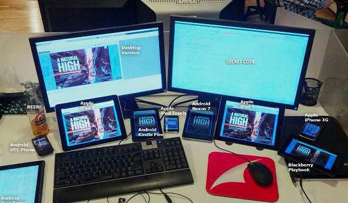
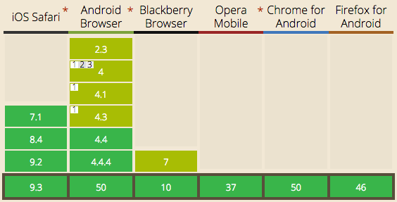
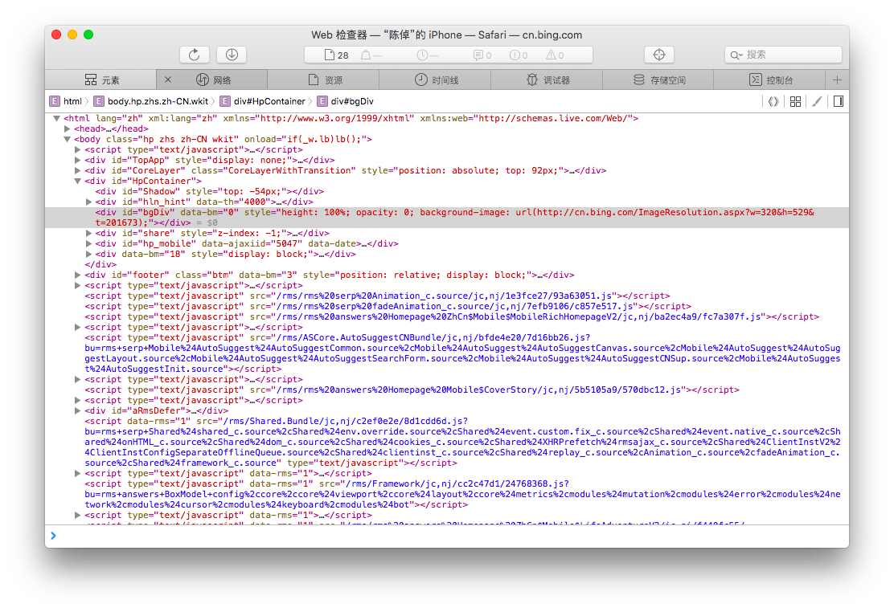
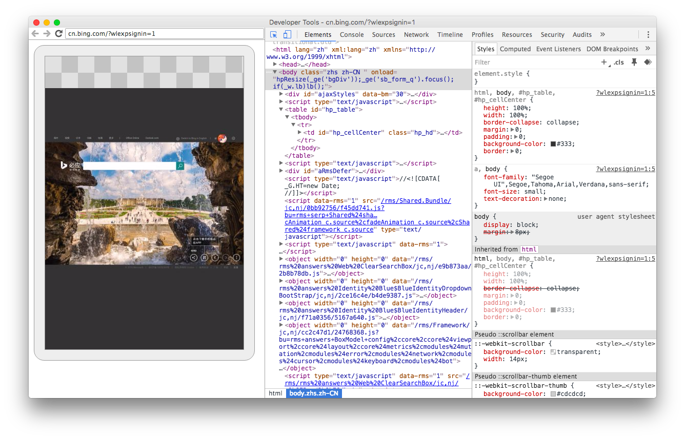
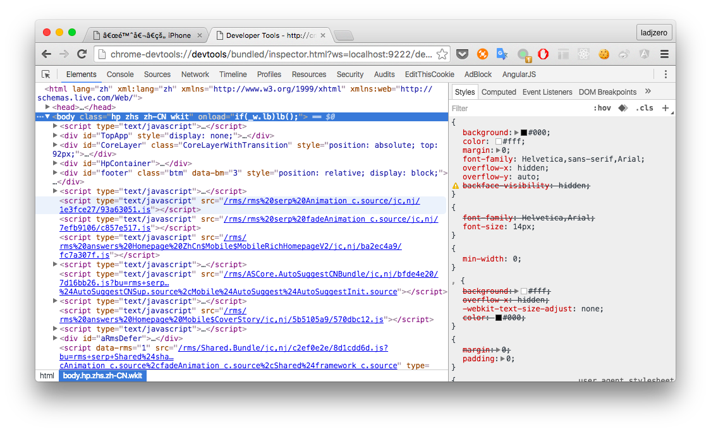

图片来自网络
背景
如今在移动平台上，web/hybrid app 不断向 native app 发起挑战。出于解放生产力和降低成本的考量，越来越多的团队开始尝试以 web 技术来开发应用。
在各移动平台上，native app 开发都得到了官方的最大支持，工具链非常成熟。尽管如此，native app 开发者往往都不喜欢真机调试，因为它非常费时。在 webapp 开发这边，情况更加糟糕。不仅费时，由于 webapp 往往要覆盖多个平台，需要在多种设备上进行调试，这还让调试工作变得非常地琐碎，难以形成通用的方案。
前端开发者在 PC 平台上如鱼得水，然而切换到移动平台，则受到掣肘。本文尝试总结一些简单有效的调试方案，以满足不同场景下调试的需求。
缩小调试范围
笔者认为移动设备上调试的需求主要来自于两点，一是 webapp 使用了（或需要适配）移动平台上独有的特性，例如触摸事件、虚拟键盘遮盖、移动平台独有的 BOM API 等，二是 webapp 出现 PC 浏览器上不可复现的错误。对于前者，我们似乎是只能迎难而上，但对于后者，则可以尽量避免。
出现在 PC 上不可复现的错误的主要原因是浏览器的兼容性问题，其中渲染的问题更加突出。得益于 JavaScript 的语言特性和 ES5 广泛实现，借助 babel 等工具，我们可以将由 ES6 ES7 语法编写的代码编译为 ES5 的，从而避免 JavaScript 上的兼容性问题。

ES5 support table （来自于 caniuse）
不过 CSS 很难甚至是不能被通过打补丁（polyfill）和编译的方式来达到完美的兼容性。开发者要对各目标平台的 CSS 支持度充分了解，从中选取广泛支持的特性来进行开发。好在 WebKit 以及衍生品已占据了移动浏览器渲染引擎（WebKit 包括用于布局渲染的 WebCore 和执行 JavaScript 的 JavaScriptCore 两个引擎，本文只取其渲染引擎的含义）的主要份额，使 CSS 特性确定的工作减轻不少。
主要的移动平台
不可否认，现如今 iOS 和 Android 系统统治了智能手机和平板电脑设备，本文所介绍的调试方法也仅针对于这两个系统。iOS 上，浏览器核心随系统一直平滑稳定地升级，iOS 6 以后支持使用 Mac Safari 来进行调试。Android 从 4.4 开始，其 WebView 基于 Chromium 开发，这不仅带来了 v8 JavaScript 引擎，还带来了可用桌面 Chrome 来调试的能力。
除此之外，微信的巨大成功，也让针对于微信的 webapp 开发备受重视。在 iOS 上，微信浏览器与 Safari 表现一致。在 Android 上，它采用的是腾讯浏览服务（TBS），并非系统提供的 WebView 组件。TBS 的初衷也许是解决在官方版本和衍生版本众多的 Android 系统上，WebView 表现一致性的问题。由于不随 Android 系统一起升级，在很长一段时间里，TBS 的 Webkit 版本都落后于系统的 WebView，导致微信常被调侃为“移动端的IE 6”。好在今年 3 月基于 Blink 打造的 TBS 2.0 终于发布，使其支持更新的 CSS 特性。

渲染引擎和一些 CSS 特性的支持情况（iOS8 搭载 Webkit2 出自 http://asciiwwdc.com/2014/sessions/206）
调试工具
本文仅介绍可以免费下载和使用的工具。

调试工具总览
weinre 与 jsconsole
weinre (WEb INspector REmote) 与 jsconsole 是原理上相似的工具。weinre 复用了 WebKit 的 Web Inspector 的界面代码，有 Safari 和 Chrome 调试器经验的开发者会对此非常熟悉。jsconsole 是一个 JavaScript 的 web 控制台，它能接管控制台的日志输出，也能响应调试服务器发出的求值命令（通过 Server-Send Event 发出），将日志和求值结果通过 xhr 发送到服务器。jsconsole 功能虽然更少，但官方提供了一个开箱即用的线上应用，http://jsconsole.com/，无需安装任何软件即可开始调试。两者的调试功能都是由 JavaScript 编写，都必须把调试服务脚本插入目标页面，使其难以用于线上产品的调试。并且由于运行在浏览器沙盒中，其提供调试能力受到了较大的限制，例如无法查看 httponly 属性的 cookie，和非 xhr 的请求。
微信 Web 调试工具与 spy-debugger
这两者也是类似的工具，都是基于 weinre 开发的。设备连接调试工具提供的代理后访问目标网页，weinre 的调试脚本会被自动注入到 HTML 页面，从而免除了手动注入的麻烦。相比于 weinre 仅能查看 HTTP xhr 请求，利用代理，微信 Web 调试工具提供了查看所有 HTTP 请求的能力。不过由于没有实现 HTTPS 中间人，无法查看 HTTPS 请求。 spy-debugger 在这些功能之上提供了查看 HTTPS 请求的功能。值得一提的是，微信 Web 调试工具额外提供了调试微信 JSSDK 的能力，不过调试对象并不是真机，需是其提供的浏览器窗口。
Safari 与 Chrome
使用 PC 浏览器来调试对应的移动浏览器，你将拥有最佳的调试体验。WebKit 家族的 PC 浏览器都有非常强大的调试工具，其调试移动设备的体验几乎与调试桌面网页无异。Opera 自从将渲染核心从 Presto 切换到 Blink 之后，自家用于调试 Opera Mobile 的 Dragonfly 也被移除了，可见 Opera 对 Webkit 调试工具也是满意的（汗）。
Mac Safari 调试 iOS Safari 和 UIWebView 只需经过简单的设置。首先在 iOS 设备上启用 Safari 的 Web 检查器功能（设置>Safari>高级>Web 检查器），再通过 USB 线缆连接到 Mac，然后就能在 Mac Safari 的“开发”菜单中选中该设备来进行调试。如果没有找到“开发”菜单，则需要在 Safari 偏好设置中启用调试功能。调试 UIWebView 的步骤是一样的，但是要求 app 在该 Mac 设备上能被调试，也就是说第三方开发者是不能直接调试微信的 UIWebView 的。

Mac Safari 调试 iOS Safari
Chrome 调试 Chrome for Android 和基于 Chromium 的 WebView 的详情可以在这里找到。值得一提的是，Chrome 调试支持 Screencast 功能，能够将移动设备上的 Web 视图投射到 Chrome 调试工具中，不过这回降低 webapp 的性能表现。

Chrome 调试 Chrome for Android
使用 Chrome 来调试 iOS 设备也是可行的。利用 google 开发的 ios-webkit-debug-proxy，把 Safari 的远程调试协议代理到 Chrome DevTools 上，可以由 DevTools 接管几乎所有的调试功能。

Chrome 调试 iOS Safari
Webkit 远程调试协议
Safari 和 Chrome 在移动平台上强大的调试能力源自 Webkit 的远程调试协议（remote debugging protocol）。Webkit 的远程调试协议是 Webkit 在 2012 年引入的，目前所有 Webkit 内核的浏览器都支持这一特性。DevTools 通过远程调试协议与目标页面相连，可以获取到 Webkit 内核提供的调试信息，这些信息远比 weinre 等在浏览器沙盒中获取的要准确和丰富。Webkit 远程调试协议与 Chrome DevTools 都是开放的，这让 ios-webkit-debug-proxy， React DevTools 和 vue-devtools 等强大且富有想象力的调试工具能成为现实。得益于协议的开放性，其他厂商也对 Webkit 调试表现出积极的兴趣。Firefox 宣布了用于调试 Webkit 内核浏览器的 Valence，不过目前仍处于技术预览版。
Fiddler
Fiddler 是可以运行在 Mac，Linux 和 Windows 上的一个用于 web 调试的代理软件。可以用来查看 HTTP API 访问，AMD 脚本加载，缓存命中等。Fiddler 有丰富的调试功能，其中支持 HTTPS 捕获和篡改请求响应对移动端调试十分有用。使用 HTTPS 捕获功能需要在移动设备上安装 Fiddler 提供的证书，各移动平台的设置方法可在这里找到。有时我们需要替换线上产品的某个 js 文件来定位问题，或者伪造 session 来模拟使用场景，Fiddler 的篡改功能就能派上用场，具体的使用细节可以在这里找到。
结论
调试运行 iOS >= 6 和 Android >= 4.4 的设备，优先采用 Safari 或 Chrome 进行调试。其余情况，可采用 weinre 及其衍生工具和 jsconsole。Fiddler 可作为这些方案的有效补充。